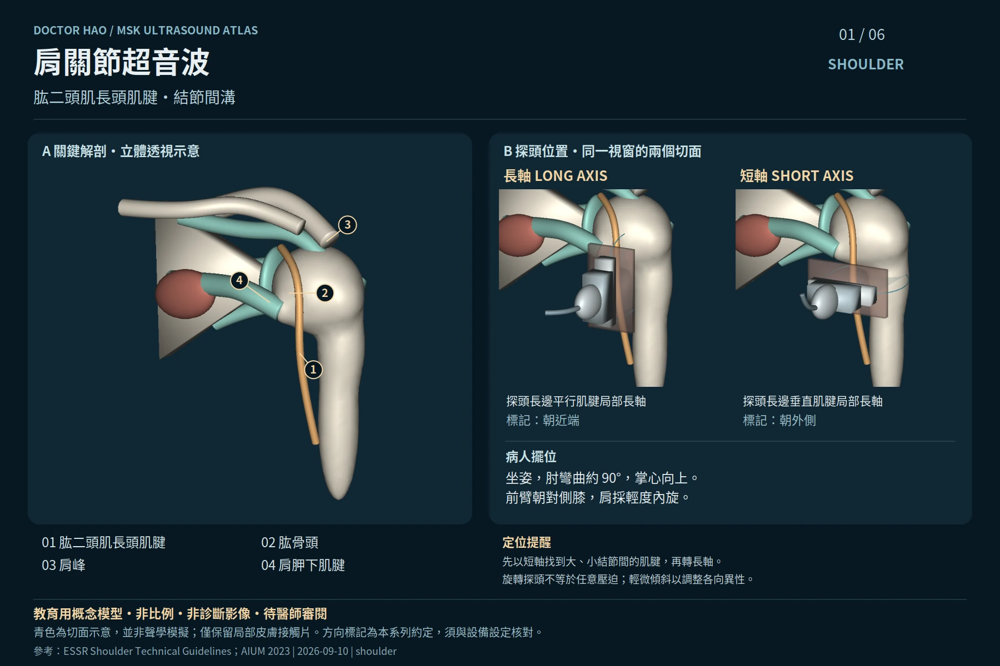
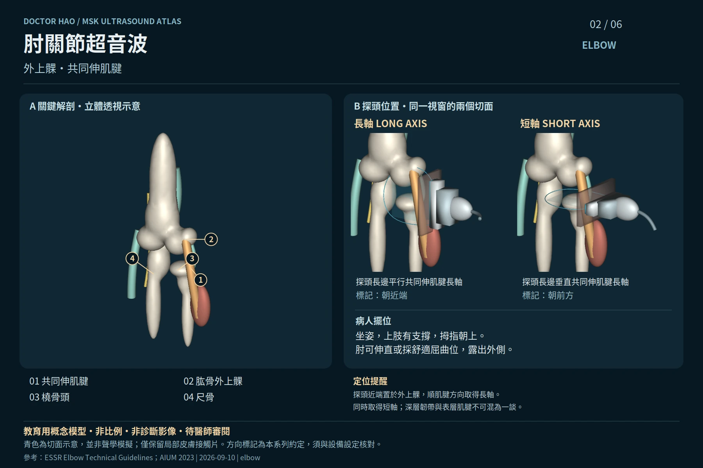
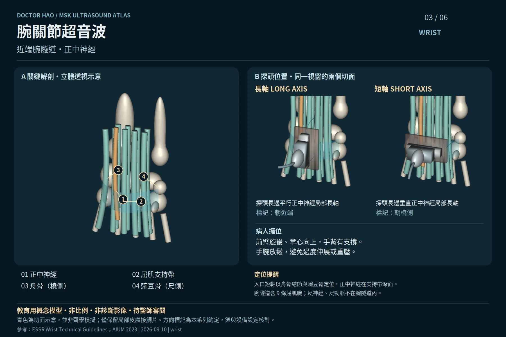
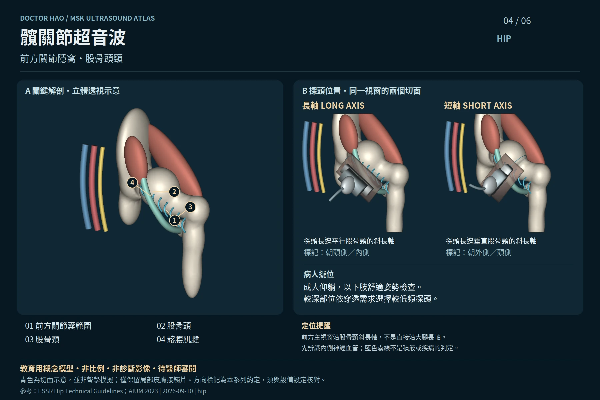
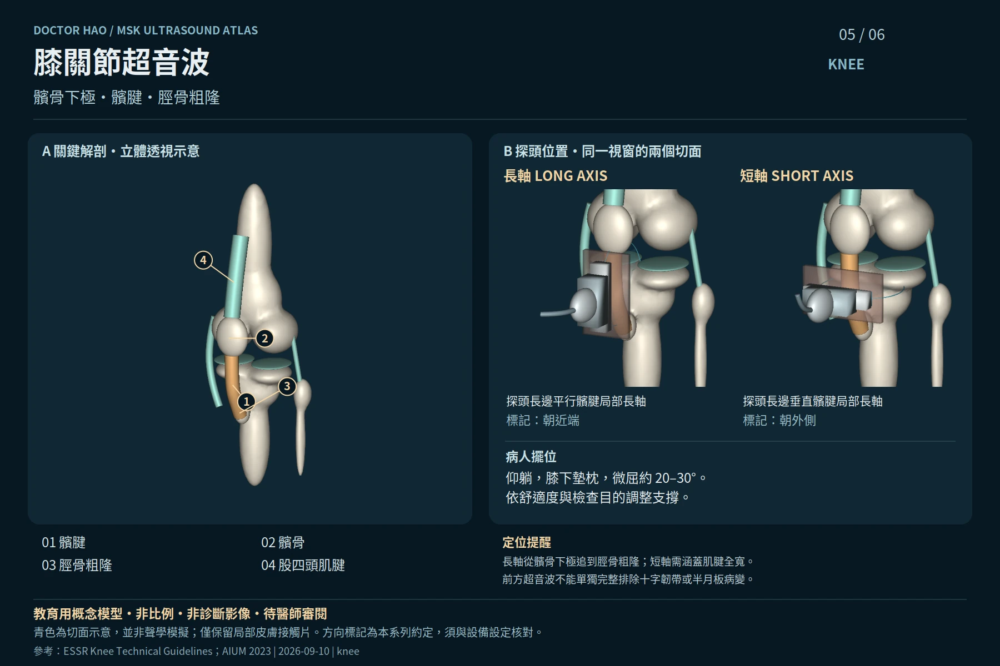
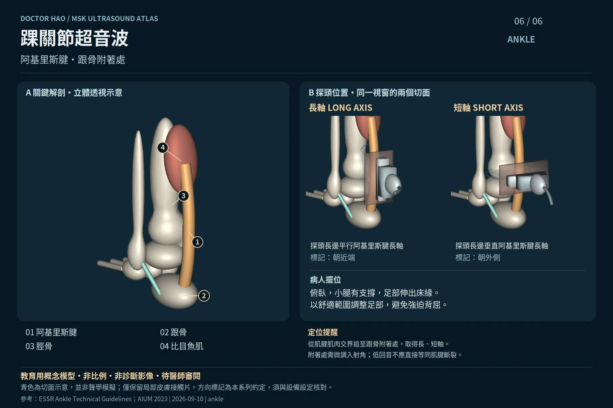

AI 輔助製作的概念性教學素材，尚待程皓醫師審閱；不是患者影像、標準化完整檢查流程或操作認證。每部位僅示範一個代表性視窗，沒有合成 B 模式影像。

以結節間溝為骨性地標辨識肱二頭肌長頭肌腱；此圖不等於完整旋轉肌袖檢查。
SVG · PNG · 長軸 GLB · 短軸 GLB · ESSR 來源

外上髁是共同伸肌腱的近端骨性地標；本視窗不取代前、內、後側的適應症導向評估。

模型分別保留四條淺指屈肌腱、四條深指屈肌腱及一條拇長屈肌腱；支持帶透明化僅為顯示層次。

成人前髖示意；斜長軸以股骨頭、股骨頸定位。不是嬰兒髖發育評估，也不能據此排除盂唇病變。

以髕腱為主要示範，髕骨未移開；骨形、軟組織厚度與間隙均為概念比例，不能量測或判讀病變。

主模型為後外側概念視角，足部姿勢不是病人擺位指令；示範肌腱連續走向，不呈現合成超音波影像。